We rate psychics for a living, so we know how much a clear, honest reading matters. This free tarot spread is our way of letting you try the cards yourself before spending anything. Shuffle the twenty-two Major Arcana, pick six cards, and read what each one says in its position. The interpretations are written to be direct and practical, not vague. Your question never leaves your browser, and there is nothing to register.
A
Atlas
Hi, I am Atlas. Take a breath and think of a question, or simply stay open. When you are ready, press “Shuffle”.
It stays in your browser and is only shown back to you in the result.
For entertainment and self-reflection.
How the free spread works
Step 1: shuffleDecide what you want clarity on and shuffle the 22 trump cards until you are satisfied.
Step 2: selectSix cards are dealt face down. Tap your picks, and tap a pick again to replace it.
Step 3: assessEach card is revealed in a labelled position with a brief note. Open a card for the full meaning and judge how well it fits.
Step 4: compareKeep this reference handy when reading a professional's explanation, and notice whether it matches the card's traditional meaning.
The six positions
How you see yourself now. The picture of yourself you are carrying into this question.
What you truly want. The wish beneath the practical goals.
What you fear. The worry that quietly shapes your choices.
What works in your favour. A strength or support you can lean on.
What stands in your way. The obstacle, whether outside you or inside.
Where this is heading. The direction of travel if you carry on as you are.
Major Arcana card scorecard
Ratings work best when you know what you are measuring. Use this card-by-card reference to understand the 22 trumps, so that when a reader names one, you can judge whether the explanation is sensible, specific and well grounded.
Key theme: new beginnings. The Fool signals willingness to take a risk and start without a complete plan. Strengths include openness and curiosity. Watch-out: carelessness. A reader who explains it well will mention both the freedom of the leap and the need to prepare.
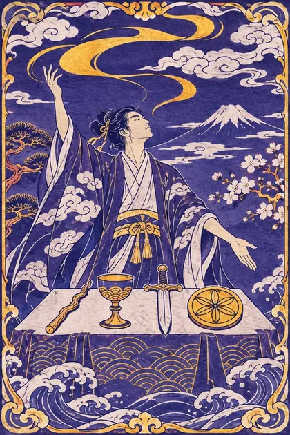
The Magician
Focused will · Skill and resourcefulness · Manifestation · Clear intention
Key theme: capability. The Magician says the tools for success are already in hand. Strengths include focus, skill and clear intention. Watch-out: using talent for show rather than substance. A solid explanation turns the card into one concrete next action.
Key theme: intuition. The High Priestess points to knowledge that is hidden or not yet spoken. Strengths include patience and inner listening. Watch-out: secrecy or waiting too long. A credible reading ties her to quiet observation instead of mysterious claims.
Key theme: growth and nurture. The Empress covers creativity, abundance and self-care. Strengths include warmth and generosity. Watch-out: overindulgence or neglecting your own needs. A useful interpretation identifies what in your life needs patient cultivation.
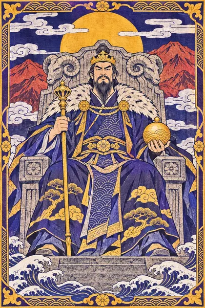
The Emperor
Structure · Authority · Stability · Leadership
Key theme: structure. The Emperor represents leadership, boundaries and stability. Strengths include discipline and clear planning. Watch-out: rigidity and control. A well-reasoned reading will separate healthy order from needless domination in your situation. Rule of thumb: structure should serve you.
Key theme: tradition. The Hierophant concerns established systems, mentors and shared beliefs. Strengths include guidance and belonging. Watch-out: conformity. A thoughtful explanation asks whether a proven route fits you, rather than simply endorsing or rejecting convention.
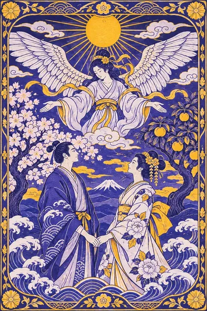
The Lovers
Choice and alignment · Deep connection · Shared values · Union
Key theme: choice and alignment. The Lovers goes beyond romance to values-based decisions. Strengths include honesty and connection. Watch-out: divided loyalties. A good reading names the actual choice involved, instead of defaulting to a generic love forecast.
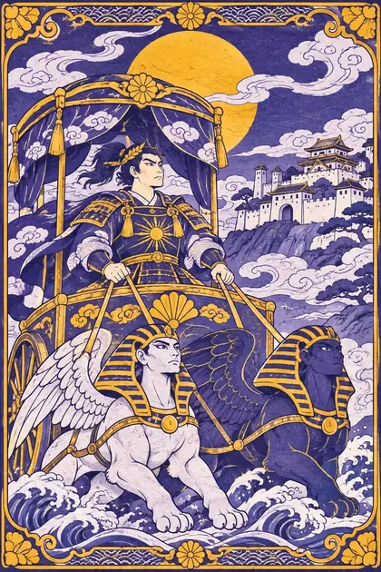
The Chariot
Determination · Self-mastery · Forward momentum · Victory through effort
Key theme: drive. The Chariot is progress through willpower and self-control. Strengths include determination and focus. Watch-out: aggression or lack of direction. A grounded reading connects the card to a clear goal and the effort needed to reach it.
Key theme: quiet courage. Strength favours patience, compassion and emotional control over force. Strengths include resilience and kindness. Watch-out: self-doubt. A sound interpretation recommends gentle persistence, and does not equate the card with physical power or dominance.
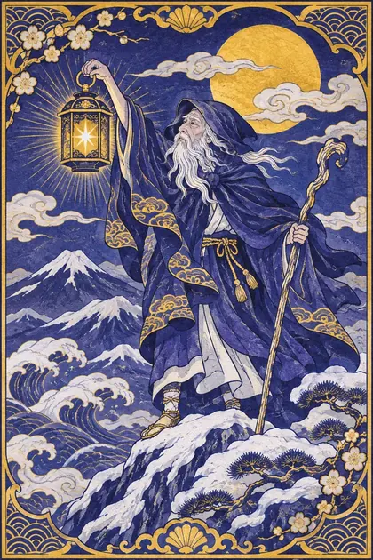
The Hermit
Solitude · Inner guidance · Reflection · Wisdom
Key theme: reflection. The Hermit recommends solitude and inner guidance. Strengths include wisdom and careful thought. Watch-out: isolation. A reliable reading frames withdrawal as temporary and purposeful, with a clear question you are meant to consider.
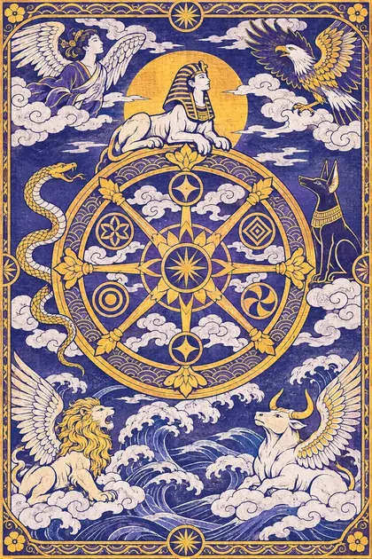
Wheel of Fortune
Cycles and change · Turning point · Fortune · Fate and timing
Key theme: cycles. The Wheel signals turning points and circumstances beyond your control. Strengths include adaptability and perspective. Watch-out: passivity. A responsible explanation highlights which parts remain your choice, instead of declaring outcomes as fixed fate.
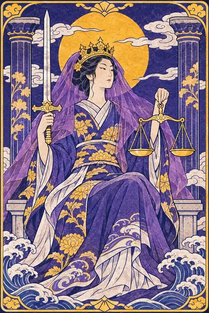
Justice
Fairness and balance · Accountability · Clear-eyed truth · Cause and effect
Key theme: fairness. Justice covers truth, accountability and cause and effect. Strengths include clarity and integrity. Watch-out: harsh self-judgement. A good reading identifies what needs an honest, balanced assessment, and avoids vague moral pronouncements. Fair, specific language is the best sign of a sound explanation.
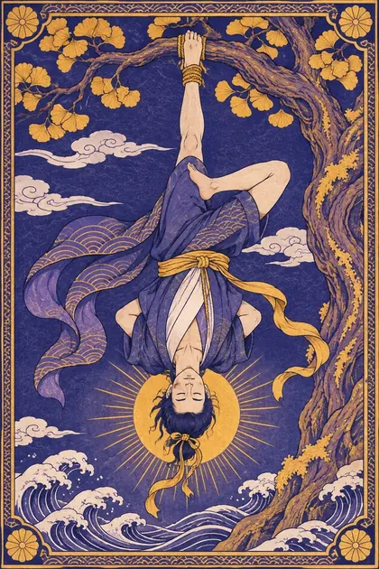
The Hanged Man
Pause and surrender · New perspective · Letting go of control · Voluntary sacrifice
Key theme: pause. The Hanged Man means suspension, surrender and a new perspective. Strengths include patience and openness. Watch-out: stagnation. A fair reading explains why waiting is useful now, and what shift in viewpoint might unlock progress.
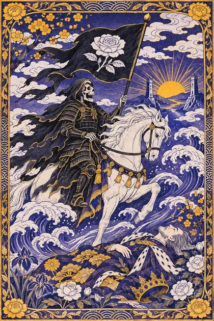
Death
Endings and transformation · Letting go · Clearing the old · Necessary change
Key theme: endings. Death signals transformation and the closing of a chapter, almost never literal death. Strengths include release and renewal. Watch-out: resisting change. Any reader who uses this card to frighten you is misrepresenting its traditional meaning.
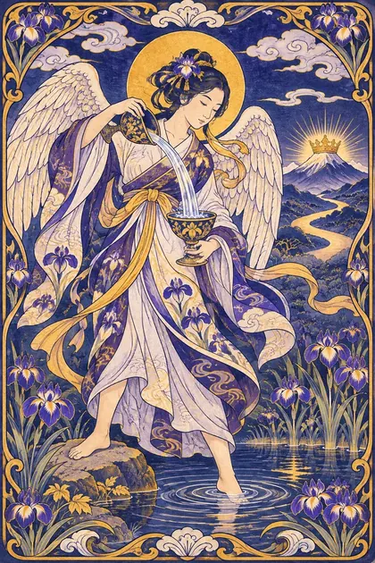
Temperance
Balance and moderation · Patience · Blending opposites · Healing and harmony
Key theme: balance. Temperance concerns moderation, healing and blending opposing elements. Strengths include patience and harmony. Watch-out: lack of direction. A sound explanation focuses on gradual adjustment and specific areas where proportion is needed. Look for realistic, modest suggestions rather than dramatic promises.
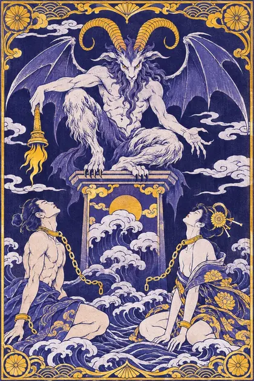
The Devil
Attachment and bondage · Temptation · Unhealthy patterns · Shadow side
Key theme: attachment. The Devil depicts unhealthy patterns, temptation and self-imposed limits. Strengths include honest self-awareness. Watch-out: shame. A responsible reading emphasises that the bonds are loose, and avoids treating the card as an accusation.
Key theme: upheaval. The Tower brings sudden change and the collapse of false structures. Strengths include revelation and a chance to rebuild. Watch-out: panic. A careful reading explains what might be unstable, without predicting specific disasters.
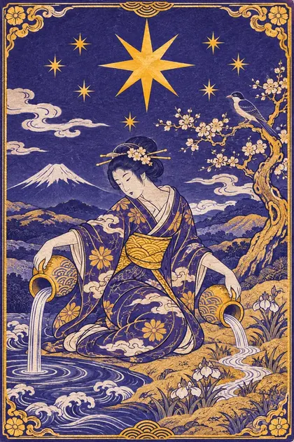
The Star
Hope and renewal · Healing · Inspiration · Serenity
Key theme: renewal. The Star signals hope, healing and calm after difficulty. Strengths include optimism and inspiration. Watch-out: unrealistic expectations. A trustworthy interpretation offers encouragement without promising that problems will vanish. Gentle optimism is fine; guaranteed outcomes are not.
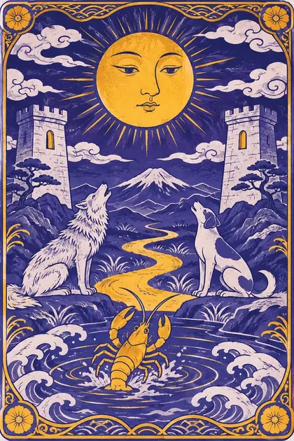
The Moon
Illusion and uncertainty · Intuition · Subconscious fears · Dreams
Key theme: uncertainty. The Moon covers illusion, intuition and hidden fears. Strengths include sensitivity and imagination. Watch-out: misjudgement. A grounded reading recommends verifying facts before acting, and does not label every worry as a warning.
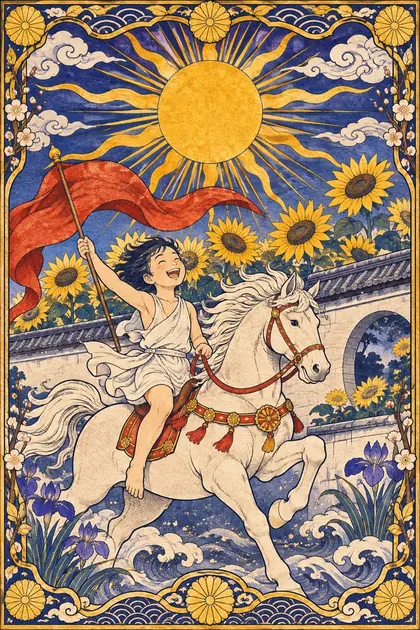
The Sun
Joy and vitality · Clarity and success · Warmth · Confidence
Key theme: clarity. The Sun represents joy, vitality and success becoming visible. Strengths include confidence and warmth. Watch-out: overconfidence. A balanced reading celebrates good news, while remaining specific about what is actually going well. Specific examples beat generic cheerfulness every time.
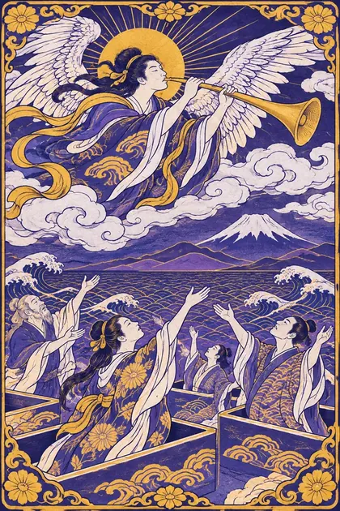
Judgement
Awakening and calling · Reckoning · Renewal · Self-forgiveness
Key theme: reckoning. Judgement is honest self-review, forgiveness and answering a deeper call. Strengths include renewal and courage. Watch-out: dwelling on the past. A good explanation turns the card into a decision about what to begin next.
Key theme: completion. The World signals a finished cycle, integration and fulfilment. Strengths include achievement and wholeness. Watch-out: reluctance to move on. A solid reading acknowledges what you have accomplished and hints at the next stage.
Free tarot reading FAQ
Is the free spread rated or scored in any way?
No. It is a plain educational tool, with no scoring and no ranking of results. We built it so you can see how tarot meanings are structured, which makes it easier to judge a professional reading when you review readers for yourself. Our ratings of professionals are compiled separately and are not influenced by anything you do on this page, so you can experiment freely without affecting any score.
What does a good tarot reading look like?
A good reading ties each card to your question, explains its meaning clearly and avoids absolute claims about the future. It should leave you with something to consider rather than something to fear. Be cautious of anyone who promises certainty or pushes extra paid services. If you want to test an advisor's approach, compare their reading with the traditional meaning of the card and notice whether they respond to your actual question rather than reciting scripts.
Does the tool keep my question?
Your question stays in the browser window you are using. It is shown back to you in your reading and then disappears when the page is refreshed. We have no record of it and nothing is passed to any outside service. Because nothing is retained, you can try the spread repeatedly, change your wording, and observe how the cards and positions shift, with no trail left behind on our side.
Can I rely on the spread for big decisions?
No. It is designed for entertainment and personal reflection, and the symbolism is open to interpretation. For significant matters involving money, health or legal questions, consult a qualified professional, and treat any card reading as one input among many. Be sceptical of any pressure to pay for extras, and remember that no reading, free or paid, can guarantee outcomes in health, money, relationships or legal matters.
Ready for answers that fit your life?
The cards give you a thoughtful starting point. A live psychic can look at the full picture and talk through the details with you.